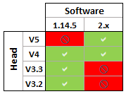

Release Notes - 2.1¶
Quick upgrade guide¶
1. Check compatibility¶
Be aware that:
you cannot mix 1.14 and 2.0 pieces of software.
2.x runs on NAO V4 and V5.
Owner of former NAO - Version should contact our customer support.For further details, see: Contacting customer support for NAO.
2. Upgrade your robot first!¶
To upgrade all your tools easily, make sure you follow this order:
| Step | Action |
|---|---|
Upgrade your robot first, using Choregraphe 1.14. For further details, see: Upgrading my NAO - from 1.x to 2.x. Be aware: your Aldebaran robot starts moving and seeking your attention as soon as you turn it on! For further details, see: Life on start-up. |
|
| Complete the upgrade thanks to the New Aldebaran Cloud. | |
Upgrade Choregraphe. For further details, see: Choregraphe suite - Installation Guide. |
|
| Upgrade all the SDKs you usually use. |
3. Port your 1.14 projects¶
For further details, see: Porting a 1.14 Project.
Keys features¶
Life on start-up¶
This version of NAOqi comes with a disruptive new feature: the robot is now able to launch autonomously any of its installed applications.
This ability, called Life and orchestrated by the module ALAutonomousLife, is active by default and starts to operate after the boot of the robot.
If needed, Life can be temporarily deactivated. For further details, see: Switching Autonomous life on and off.
When the Life is active, what you see depends on the applications installed on your robot. For further details, see: Understanding Autonomous Life settings.
New Web Page¶
The Aldebaran robot Web page has been fully redesigned.
It is simpler to use and when the robot is configured for the first time, a wizard mode welcomes beginners. Yet, advanced users may still access to the former and deprecated Web page.
For further details, see:


{kind=link}
New Aldebaran Cloud¶
Retrieve applications and system updates automatically!
To access to Aldebaran Cloud:
- Follow this link: https://cloud.aldebaran-robotics.com/
- You can also click the install new apps link available from the Web page.
Meet the Aldebaran robot family¶
Aldebaran software suite welcomes new robots: NAO V5, Romeo and Pepper.
Have a look at their specific documentation corners:
NAO - Documentation | Romeo - Documentation | Pepper - Documentation
Or ask Choregraphe 2.0 to display them!
Step Action Choose Edit > Preferences. Click the Virtual robot tab. Choose a Robot model. Click OK button.
Result
Choose Connection > Connect to virtual robot.
See the new robot model displayed in the Robot View.